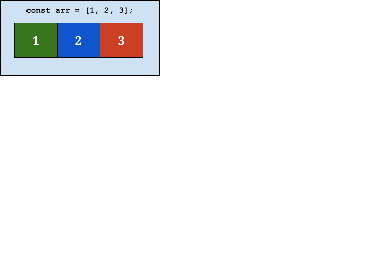
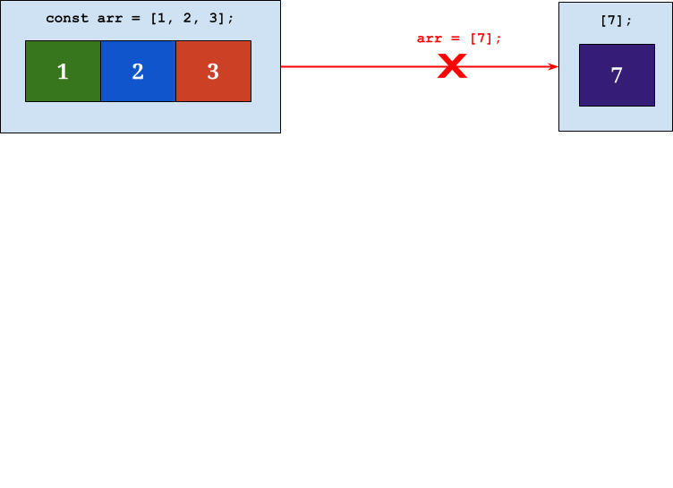
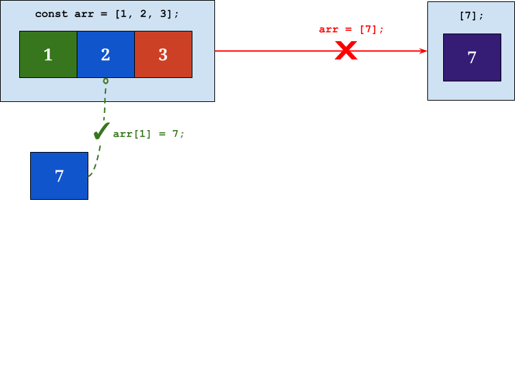
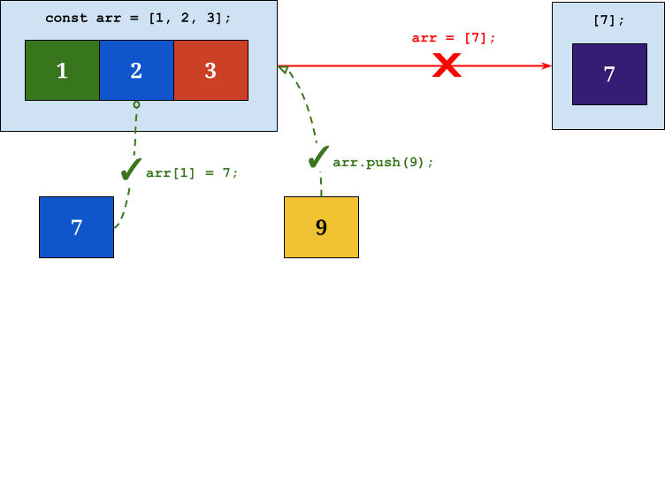
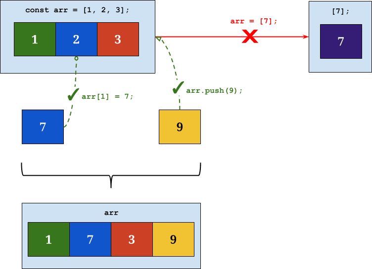
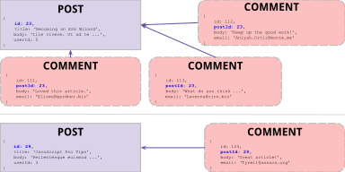
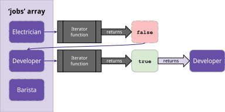
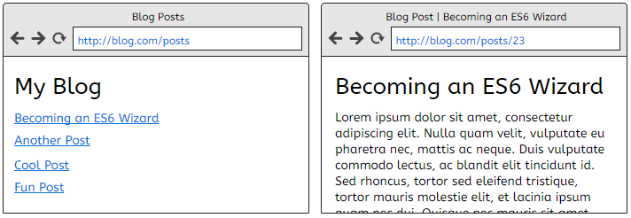
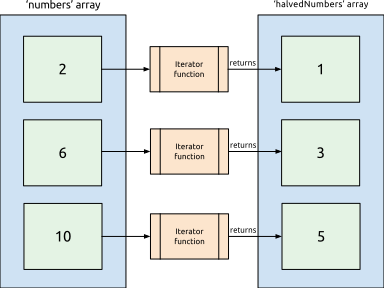

Getting Started with ES6 and ES7 JavaScript

First Things First
Thank you to our wonderful TAs!
Need help? Note the course website & instructor contact info on the whiteboard
Get Started: Tools
We'll be using the following tools in class:
-
Environment
-
Command Line Interface (your preference)
- Terminal, cmd, X11, Git Bash, etc.
-
Text Editor (your preference)
- Atom, SublimeText, WebStorm, etc.
Optional Activity
- Login to http://codepen.io (it's free!)
- For each CodePen exercise, click
Edit on CodePen - Click the
Forkbutton at the top - Edit away! Your changes will save to a new pen in your CodePen account
See the Pen Block-scoping: ES5 (Before) by Liz Shaw (@anythingcodes) on CodePen.
Activity
Node.js Check
- Open your favorite command line application (such as Terminal or cmd)
- Type in
node -vand press Enter - If your version is 6.0.0 or above, you're good to go!

No luck? No problem — we won't be using Node.js until a later session. See a TA or instructor after class and we'll help you out!
History
JavaScript's standard referred to as ECMAScript, abbreviated ES. Was eventually versioned by ordinal number (e.g. ES3).

- 2015: ES6 / ECMAScript 2015 / ES2015
- 2016: ES7 / ECMAScript 2016 / ES2016
- ES.Next — The next upcoming release of ECMAScript
Terms
📄 Standard:
- ECMAScript, abbreviated ES
- Describes features, syntax, and behavior of all implementations
- Think of it as a ruleset
✍ Implementation:
- JavaScript, the implementation of the ECMAScript standard
- Implementations track standards
📝 We'll implement the new features from versions 6 and 7 of ECMAScript using JavaScript
Why use ES6?
- Simpler, less error-prone syntax
- Easier for other developers to understand your code
- Enforces best coding practices
- Top JavaScript libraries will be written in ES6. If you aren't familiar with ES6, you'll be at a disadvantage when trying to read documentation and build new features.
- Backwards compatible: Take advantage of new features without worrying about ripping apart existing projects
- Integrates nicely with modern build tools — easily add linting, minification, and other handy optimizations
🌟 Above all, it's the new standard. This means that, in the near future, ES6 will be standard in each browser.
Transpiling
Transpiling = Transformation + Compiling
Before
const getMessage = () => 'Hello World';After
Waiting...
Benefits to Transpiling
- Browser support
- No need to wait for browsers/engines to catch up with the ECMAScript specification
- Focus on writing clean, easy-to-read code — compile it to a cross-browser-compatible format
- JavaScript will continue to evolve constantly; without transpilation, you'll miss out on innovations that make JavaScript more effective, efficient, and robust
Scopes & Variables
Scopes 🔬
-
Block Scopes (a.k.a. lexical scopes):
{ // anything within { } that isn't a function } for (var i = 0; i < 5; i++) { console.log(i); }- Examples:
{ },if () { },for() {},while() { }, etc. - Purpose: Declare variables as close as possible, as local as possible, to where they will be used.
- Examples:
-
Function Scopes:
function func() { // function required }- Purpose: Code wrapped in a function effectively "hides" any enclosed variable or function declarations from the outside scope.
var only respects function scopes
Function Scope Problems
var variables are function-scoped.
They ignore block scoping.
See the Pen Block-scoping: ES5 (Before) by Liz Shaw (@anythingcodes) on CodePen.
View SolutionTo fake block scoping, an immediately-invoked function expression (IIFE) is often used
The let Declaration
- Block-scoped
{ }, unlike the function-scopedvar - Value can be reassigned
See the Pen Block-scoping with let (Before) by Liz Shaw (@anythingcodes) on CodePen.
View SolutionWay easier than using an IIFE! 🏆
Activity
Instructions can be found by editing the below pen on CodePen. Be sure to fork the pen first if you'd like to save your work to your account!
See the Pen Block-scoping with let (Before) by Liz Shaw (@anythingcodes) on CodePen.
The const Declaration
- Block-scoped, like
let - Value cannot be reassigned
conststands for constant
- Must be initialized on declaration
- Communicates your variable's intent to other devs
- Helps catch unintended changes
- No more
🎉var PLZ_DONT_CHANGE = 42;
See the Pen const (Before) by Liz Shaw (@anythingcodes) on CodePen.
View SolutionModifying Complex Values
Although you can't reassign a const's value, contents of complex values (objects & arrays) can be modified





Modifying Complex Values
Examples
See the Pen Updating the contents of const values by Liz Shaw (@anythingcodes) on CodePen.
Do you still need var?
No 😊
Only one potential case: If you have code that should be available from the global object (window in browsers), e.g. if you need to access code across frames or windows
👆 This is rare and should generally be avoided
Activity
- Complete activities 1 and 2 in CodePen. Be sure to fork the pen first if you'd like to save your work to your account!
See the Pen const and let exercise by Liz Shaw (@anythingcodes) on CodePen.
Strings
String Helper Methods
Step aside, indexOf() — there are now easier ways to identify substrings:
includes()returns true or false depending on if the given text is found anywhere within the stringstartsWith()returns true or false depending on if the given text is found at the beginning of the stringendsWith()returns true or false depending on if the given text is found at the end of the string
String Helper Methods
Each method accepts two arguments:
- the text to search for
- an optional index from which to start the search
includes()andstartsWith()include the character at that index, whileendsWith()excludes the character at that index
See the Pen String helper methods: includes(), startsWith(), endsWith() by Liz Shaw (@anythingcodes) on CodePen.
Template Strings
This:
'' +
'Hello ' + str + '!
' +
'';... becomes:
`
Hello ${str}!
`;Using Template Strings
const message = `User ${name} scored ${score} on the exam`;
- Use backticks (
` `) around the string - Use
${ }around any variable or expression - Work well with ternary operators, for example
userIsYoungerThan21 ? serveGrapeJuice() : serveWine()
const message = `User ${name} ${score >= 60 ? 'passed' : 'failed'} the exam`;Activity
Refactor this code to use template strings.
See the Pen Template Strings Activity by Liz Shaw (@anythingcodes) on CodePen.
Arrow Functions
Arrow Functions
Making an arrow function:
- Remove the word
function - Place a fat arrow (
=>) after parameters
Trimming it down:
- If there's only one parameter, remove the surrounding parentheses
() - If there's only one expression in the function body, remove
{ }andreturn(implicit return)
ES5
const sum = function(a, b) {
return a + b;
}becomes
ES6
const sum = (a, b) => a + b;Activity
Using arrow functions
Refactor the following code to use arrow functions.
See the Pen Arrow functions by Liz Shaw (@anythingcodes) on CodePen.
There's this One Problem
this determines context
const person = {
name: 'Wesley',
getName: function() {
return this.name;
}
};
console.log(person.getName()); // WesleyBinding and changing this in functions is one of the most common JavaScript errors
It's possible to mistakenly affect one object when you meant to affect another
Arrow Functions and this
- Arrow functions do not have a
this🌟 - The value of
thisis lexically fetched from the scope the arrow function sits inside
See the Pen Arrow functions and `this` by Liz Shaw (@anythingcodes) on CodePen.
View SolutionActivity
Fixing this scoping with arrow functions
- Refactor the following code to use arrow functions. Start by removing the
var self = this;line (line 18) - Get the
sort()function (line 20) on one line only - Use template strings whenever possible
- Replace
varwithconstandlet
See the Pen Arrow Functions Activity by Liz Shaw (@anythingcodes) on CodePen.
Template Strings with Arrow Functions
Array Helpers
Array Helpers
Convenient methods applied to arrays
| Method | Parameters | Returns |
|---|---|---|
| forEach | function(element, index, array) | undefined ✗ |
| every | function(element, index, array) | true or false |
| some | function(element, index, array) | true or false |
| filter | function(element, index, array) | filtered array (i.e. items from the original array that share a common characteristic) |
| map | function(element, index, array) | manipulated array (i.e. each item in the original array is manipulated) |
| find | function(element, index, array) | 1 element |
| reduce | function(accumulator, element, index, array), initialElement | 1 reduced value |
Array Helpers
Commonalities
Array Helpers
Moving away from for loops
- Functional programming
- Readability: Easier for other devs to understand
- Much more compact code
- Maintainability
forEach
Loop through elements in an array
arr.forEach(iteratorFunction)
ES5
var names = ['Morgan', 'Taylor', 'Lesley'];
for (var i = 0; i < names.length; i++) {
console.log(names[i]);
}
ES6: forEach
var names = ['Morgan', 'Taylor', 'Lesley'];
names.forEach(function(name) {
console.log(name);
});forEach
arr.forEach(iteratorFunction) The iterator function runs once for each element in the array.
See the Pen ES6 Iterator Functions by Liz Shaw (@anythingcodes) on CodePen.
Activities
Using the forEach Helper
Activity 1
See the Pen ES6 Lesson 1: forEach #1 by Liz Shaw (@anythingcodes) on CodePen.
Activity 2
See the Pen ES6 Lesson 1: forEach #2 by Liz Shaw (@anythingcodes) on CodePen.
map
The map helper returns an array of results after iterating through an array
You can assign the resulting array to a variable:var newArr = arr.map(iteratorFunction);
ES5
var numbers = [2, 6, 10];
var halvedNumbers = [];
for (var i = 0; i < numbers.length; i++) {
halvedNumbers.push(numbers[i] / 2);
}
console.log(halvedNumbers); // 1, 3, 5
ES6: map
var numbers = [2, 6, 10];
var halvedNumbers = numbers.map(function(number){
return number / 2;
});
console.log(halvedNumbers); // 1, 3, 5
No need to create an empty array! 🎉
Activities
Using the map Helper
At-Home Challenge: Implement a pluck function
function pluck(array, property) {
// your code here
}Hint: Access a property on an object by using square bracket notation. For example:
var animal = { type: 'Dinosaur', status: 'Extinct' };
animal['type']; // returns 'Dinosaur'Pluck should accept an array and a string representing a property name and return an array containing that property from each object, for example:
var cats = [ { name: 'Colonel Meow' }, { name: 'Lil Bub' }, { name: 'Grumpy Cat' }];
pluck(cats, 'name'); // returns ['Colonel Meow', 'Lil Bub', 'Grumpy Cat'];
filter
The filter helper returns an array of filtered elements
Use an iterator function that returns true or false
var newArr = arr.filter(iteratorFunction);
ES5
var users = [
{ username: 'ryan10', active: true },
{ username: 'morgan', active: false }
];
var activeUsers = [];
for (var i = 0; i < users.length; i++) {
if (users[i].active) {
activeUsers.push(users[i]);
}
return false;
}
console.log(activeUsers);ES6
var users = [
{ username: 'ryan10', active: true },
{ username: 'morgan', active: false }
];
var activeUsers = users.filter(function(user) {
return user.active;
});
console.log(activeUsers);Activities
Using the filter helper
Activity 1
See the Pen ES6 Lesson 1: filter #2 by Liz Shaw (@anythingcodes) on CodePen.
Activity 2
See the Pen ES6 Lesson 1: filter #1 by Liz Shaw (@anythingcodes) on CodePen.
Tip: Try to use more than one array helper for Activity 2
filter
Filtering API Responses

Activities
Filtering API responses
Activity 3
See the Pen ES6 Lesson 1: filter #3 by Liz Shaw (@anythingcodes) on CodePen.
Tip: Try to use more than one array helper
At-Home Challenge: Implement a reject function
function reject(array, iteratorFunction) {
// your code here
}Hint: You may use filter.
Reject should work opposite to filter; if a function returns true, the item should not be included in the new array, for example:
var numbers = [ 5, 10, 15, 17, 18, 20 ];
var lessThanEighteen = reject(numbers, function(number) {
return number >= 18;
});
console.log(lessThanEighteen); // returns [ 5, 10, 15, 17 ];find
Iterates though an array until an iterator function returns true, then returns the corresponding object
var matchingObject = arr.find(iteratorFunction);
ES5
var jobs = [
{ title: 'Electrician' },
{ title: 'Developer' },
{ title: 'Barista' }
];
var job;
for (var i = 0; i < jobs.length; i++) {
if (jobs[i].title === 'Developer') {
job = jobs[i];
break;
}
}
console.log(job); // { title: 'Developer' }ES6
var jobs = [
{ title: 'Electrician' },
{ title: 'Developer' },
{ title: 'Barista' }
];
var job = jobs.find(function(job) {
return job.title === 'Developer';
});
console.log(job); // { title: 'Developer' }find

find
Commonly used for single-page web apps

All Array Helpers
Commonalities
- Iterator functions

Iterator Functions
All iterator functions receive three optional arguments in this order:
- the current element in the array
- the index of that element
- the array being traversed
function iteratorFunction(current, index, arr) {
console.log(current + ' is at index ' + index);
console.log(arr);
}